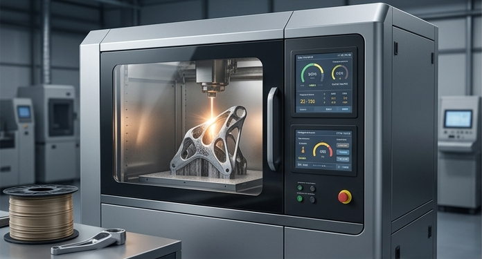
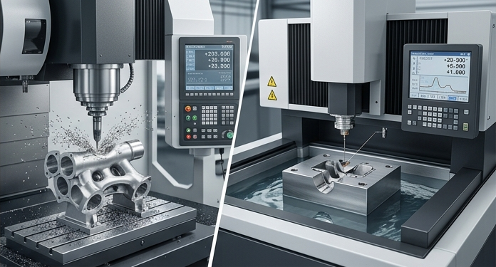
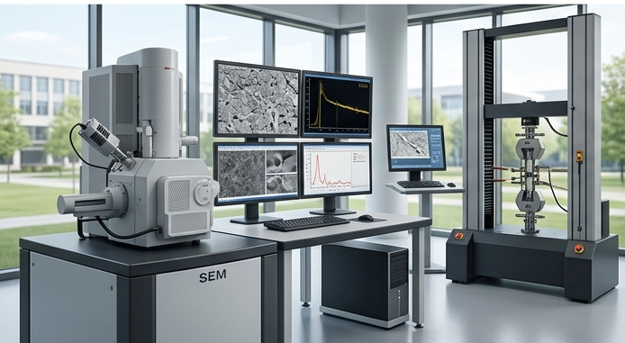
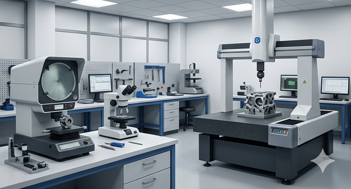

Additive Manufacturing
High-end 3D printing capabilities utilizing engineering-grade polymers and metal alloys. This resource allows for rapid iteration and the creation of complex geometries that are impossible with traditional subtractive methods.

CNC and EDM Manufacturing
Precision subtractive manufacturing using multi-axis CNC milling and Electrical Discharge Machining (EDM). This ensures your final parts meet sub-micron tolerances and can handle the most demanding industrial applications.

University Testing Access
Strategic partnerships with Tier-1 academic institutions, providing access to specialized high-end equipment and advanced material characterization. This bridges the gap between industrial R&D and cutting-edge academic research.

Dedicated Lab Facility
A controlled environment equipped for assembly, inspection, and proprietary testing. Our lab is designed for rapid troubleshooting and high-resolution quality control for all pre-production components.